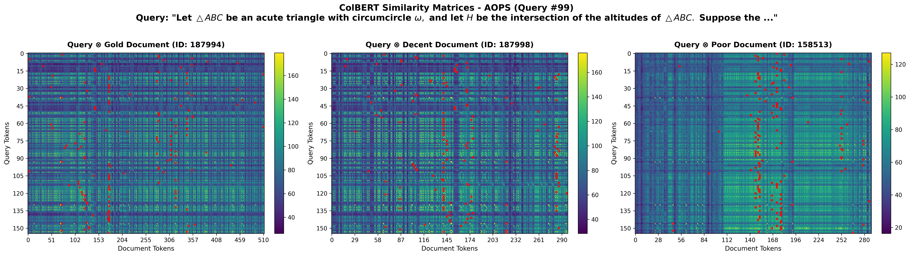

The Curious Case of Lex
I recently spent a couple days trying to train a convolutional neural network (CNN) for information retrieval. What initially seemed like a promising direction ended up being a dead end for reasons that, in hindsight, were obvious. In this blog post, I'll detail my motivations for this direction, my implementation, and what went wrong.
Let's begin with why I thought to use CNNs, models normally used for visual data, in the first place.
Reasoning-Intensive Information Retrieval
Recent advances in information retrieval have shifted focus towards reasoning-intensive information retrieval (RiIR): queries that require intensive reasoning to retrieve the most pertinent documents from a large corpus. An example would be a medical query that requires extensive search through medical journals and reasoning beyond semantic matching to determine the proper diagnosis.
Current state-of-the-art models, such as the Qwen3-rerankers, fall short of performing well on reasoning-intensive retrieval benchmarks such as BRIGHT and TEMPO.
Before I dive into how CNNs got mixed up in all of this, I'll first give a rough outline of how ColBERT, an older retrieval model, works. ColBERT is a late interaction model: it encodes queries and documents independently (like a dual encoder) but retains token-level embeddings rather than collapsing them into a single vector. The "late" refers to when query-document interaction occurs, after encoding, at scoring time, but at token granularity. Specifically, ColBERT builds a similarity matrix between query and document tokens, then derives a relevance score via MaxSim: the sum of maximum similarities for each query token across all document tokens.
A natural question arises: do similarity matrices for query/gold-document pairings look different from their query/non-gold-document counterparts? More specifically, if we construct a similarity matrix and "highlight" the MaxSim at each row, do we see visual cues that allow us to differentiate between query/gold-doc, query/normal-doc, and query/bad-doc pairings? Here, I used BM25, a lexical method that is extremely cheap and fast, to initially rank the documents. I took the "normal doc" to be BM25's top-1 result and the "bad doc" to be one that falls outside the top 100. I tried this on a few queries, and you can see an example below:
Figure 1: A query from the Art of Problem Solving (AoPS) split of BRIGHT with similarity matrices for its gold document, normal document, and bad document.
As you can see from Figure 1, there are some subtle cues. If we define tokens used as the number of document tokens that get "highlighted" (i.e., are the maximum of at least one row) and max single usage as how often the most frequently used token appears, then query/gold-document pairings tend to be higher on the former and lower on the latter compared to query/non-gold-document pairings. That is, there's less "column" domination: the similarity matrix for gold documents looks flat because many tokens contribute, while for non-gold documents there's more clear token dominance, visible as "spikes."
Given these visual cues, I was curious whether a CNN could learn to disambiguate between gold documents and non-gold documents given a query.
Building the Pipeline
I wanted to see how powerful this CNN could be given only a small set of queries to train on. Ideally, if it could disambiguate well, it could serve as an efficient and performance-boosting final step for a retrieval system. Consequently, I focused training specifically on the four hardest splits of BRIGHT: LeetCode, AoPS, Economics, and Robotics. Training was done individually (yielding four separate CNNs). For each split, I used only 30% for training, which amounted to 30–42 queries depending on the split. During training, I gave the CNN samples only from BM25's top 100 documents (along with the gold documents). At test time, I applied the same method: use BM25 to retrieve the top 100, add in the gold documents (since BM25 has poor recall on reasoning-intensive queries), shuffle, and then feed this to the CNN for reranking.
Training the CNN.
The CNN treats ColBERT similarity matrices as 128×128 grayscale images, using a 4-layer architecture (32→64→128→256 channels) with batch normalization, followed by an MLP head. Specifically, ColBERT (frozen) produces a similarity matrix, which is resized to 128×128 and treated as a grayscale image. The CNN progressively increases channels (1→32→64→128→256) while halving spatial dimensions (128→64→32→16→8) via max pooling. The final 8×8×256 = 16,384 features are flattened and passed through an MLP (16384→256→128→1) to produce a single relevance score. Training used listwise cross-entropy loss over candidate documents, with learning rate 10-4, AdamW optimizer, and 15 epochs.
The CNN Leads to a 2× Performance Increase
Initial results seemed very promising....
| Method (nDCG@10) | Economics | AoPS | LeetCode | Robotics |
|---|---|---|---|---|
| CNN-Sim (Ours) | 0.248 | 0.492 | 0.270 | 0.281 |
| ColBERTv2 | 0.128 | 0.234 | 0.310 | 0.134 |
Table 1: Reranking performance (nDCG@10) with BM25 top-100 candidates (with gold documents additionally infused) on the test sets. For most splits, the CNN led to a 2× increase in nDCG@10.
My immediate next step was to test a trained model on an expanded candidate set. I wanted to see how the CNN performed when given BM25's top 250, 500, 750, and 1000. As shown below, the system collapsed immediately:
| Method | 100 | 250 | 500 | 750 | 1000 |
|---|---|---|---|---|---|
| CNN-Sim (Ours) | 0.248 | 0.10 | 0.04 | 0.02 | 0.02 |
| ColBERTv2 | 0.128 | 0.11 | 0.10 | 0.10 | 0.09 |
Table 2: Testing the CNN model for the Economics split on an expanded candidate set.
I then retrained the CNN models, this time sampling from BM25's top 1000 instead of the top 100. This minimized the collapse, but the results were still unimpressive. The k=1000 model was much more robust but lost the sharp edge at top-100 (Table 3). What was going on?
| Method | 100 | 250 | 500 | 750 | 1000 |
|---|---|---|---|---|---|
| CNN-Sim (Ours) | 0.165 | 0.114 | 0.093 | 0.088 | 0.086 |
| ColBERTv2 | 0.128 | 0.108 | 0.099 | 0.095 | 0.095 |
Table 3: Testing the CNN model (trained on k=1000) for the Economics split across candidate set sizes.
| Method | 100 | 250 | 500 | 750 | 1000 |
|---|---|---|---|---|---|
| k=100 trained | +94% | -9% | -60% | -80% | -78% |
| k=1000 trained | +29% | +6% | -6% | -7.4% | -9% |
Table 4: Gap between CNN-Sim (Ours) and ColBERTv2. The collapse is minimized when training the CNN with samples from BM25's top 1000, but the results are still concerning.
CNN Reranks ColBERTv2's Ranking
I decided to change the pipeline: have ColBERT first rerank the documents given BM25's top 1000 (with gold documents infused), then have the CNN rerank ColBERT's rankings.
Unfortunately, this proved unfruitful (Table 5). The CNN models trained on k=100 didn't improve ColBERT's ranking. Initially, I believed recall might have been the issue, but using a stronger model as the intermediary, such as Qwen3-reranker-0.6B, didn't help either (Table 6).
| Method | Economics | AoPS | LeetCode | Robotics |
|---|---|---|---|---|
| CNN-Sim (Ours) | 0.072 | 0.185 | 0.162 | 0.091 |
| ColBERTv2 | 0.095 | 0.156 | 0.283 | 0.077 |
| ColBERTv2 Recall % | 38.1% | 41.4% | 48.4% | 33.9% |
Table 5: Pipeline results: having the CNN rerank ColBERTv2's top-100.
| Method | Economics | AoPS | LeetCode | Robotics |
|---|---|---|---|---|
| CNN-Sim (Ours) | 0.102 | 0.232 | 0.198 | 0.181 |
| Qwen3-Reranker-0.6B | 0.156 | 0.156 | 0.372 | 0.121 |
| Qwen3 Recall % | 56.9% | 42.9% | 78.6% | 54.4% |
Table 6: Pipeline results: having the CNN rerank Qwen's top-100.
The Culprit: Distributional Shift
ColBERT's/Qwen's top-100 looks completely different from BM25's top-100 in terms of similarity matrix structure. ColBERT's/Qwen's "mistakes" are semantically plausible but wrong for reasoning—a totally different error pattern than BM25's lexical false positives. Essentially, the goal was to train a CNN to find patterns that translate to relevance, but in reality it learned patterns that translate to high lexical matches. High lexical matches in the top 100 correlate with irrelevance, but the injected gold documents, by virtue of not being in the top 100, don't have high lexical matches. When expanding to the top 1000, the bottom 900 also lack high lexical matches, so whatever signal the CNN learned collapses (gold and the bottom 900 become indistinguishable).
Correlation analysis between matrix features and CNN scores reveals the mechanism:
| Feature | Correlation | Interpretation |
|---|---|---|
| Matrix std | -0.37 | Prefers uniform matrices |
| Density | -0.23 | Avoids strong token matches |
The CNN learned: "flat, uniform matrices → relevant." High variance and sparsity predict low CNN scores. The model captured texture statistics, not semantic relevance. Within BM25's top-100, a distributional quirk exists: gold documents exhibit dense but structured similarity patterns, while BM25 negatives show sharp lexical spikes. The CNN found a texture shortcut separating these classes. However, at ranks outside the top 100, many documents have uniform similarity (vague semantic overlap) with low variance, exactly what the CNN learned to prefer.
The Fundamental Limitation.
This failure reveals a deeper issue. Similarity matrices capture which tokens align and how many align, but not how they logically connect. For reasoning-intensive retrieval, relevance depends on token interactions within the document which is structure that is invisible to the query-document similarity matrix. A gold document and a plausible-but-wrong document may have identical similarity matrices, both flat and distributed. The difference lies in the reasoning structure: how evidence chains together to answer the query. This structure exists within the document, in how its content interacts to answer the query but isn't clear from a similarity matrix alone.
Conclusion
This was all pretty obvious in hindsight. I tried tweaking the pipeline by training a CNN on ColBERT's top-100 instead of BM25's top-100, but this didn't lead to any improvements compared to using ColBERT alone. This tracks with the observations above: the similarity matrix is not the right medium for understanding relevance (visually). It's hard to disambiguate gold documents from decent documents. Maybe there are other structures worth exploring?
I skipped giving implementation details for the sake of breviy, but if you have any ideas/questions or just want to chat about this stuff (or information retrieval generally), please feel free to email me!